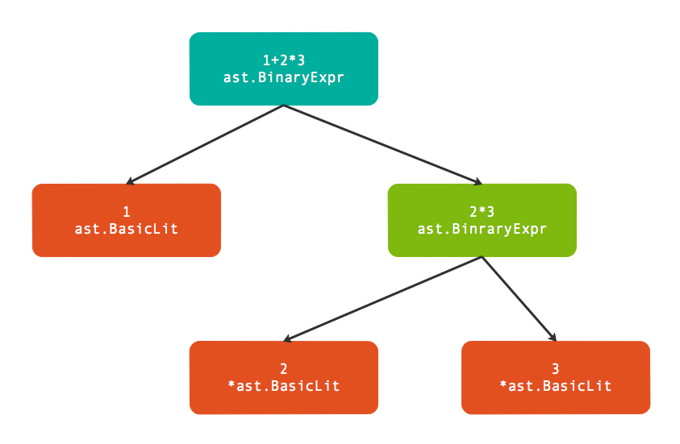

- 凹语言(Go实现, 面向WASM设计): https://github.com/wa-lang/wa
- WaBook(Go语言实现的MD电子书构建工具): https://github.com/wa-lang/wabook
第3章 基础表达式
为了简化代码，我们从基础表达式开始。基础表达式是指完全由数值型面值和标识符组成的表达式。
3.1 基础表达式语法
基础表达式主要是指由一元和二元运算符组成的表达式，运算的主体是各种面值或标识符。基础表达式语法如下：
Expression = UnaryExpr | Expression binary_op Expression .
UnaryExpr = Operand | unary_op UnaryExpr .
Operand = Literal | identifier | "(" Expression ")" .
binary_op = "||" | "&&" | rel_op | add_op | mul_op .
rel_op = "==" | "!=" | "<" | "<=" | ">" | ">=" .
add_op = "+" | "-" | "|" | "^" .
mul_op = "*" | "/" | "%" | "<<" | ">>" | "&" | "&^" .
unary_op = "+" | "-" | "!" | "^" | "*" | "&" | "<-" .
其中Expression表示基础表达式的递归定义，可以是UnaryExpr类型的一元表达式，或者是binary_op生成的二元表达式。而基础表达式运算符两边的对象由Operand定义，主要是面值或表达式，也可以是由小括弧包含的表达式。
3.2 解析表达式
parser.ParseExpr函数是解析的单个表达式（可以包含注释），因此返回的ast.Expr是一个表达式抽象接口：
type Expr interface {
Node
// contains filtered or unexported methods
}
除了内置一个ast.Node接口之外没有任何其它信息和约束（这是Go语言隐式接口的缺点，用户需要自己猜测接口之间的逻辑关系）。
而ast.Node接口更简单，只有两个方法表示了这个语法树结点的开始位置和结束位置：
type Node interface {
Pos() token.Pos // position of first character belonging to the node
End() token.Pos // position of first character immediately after the node
}
通过分析go/ast包的文档可以发现很多类型以Expr为后缀名：
$ go doc go/ast | grep Expr
type BadExpr struct{ ... }
type BinaryExpr struct{ ... }
type CallExpr struct{ ... }
type Expr interface{ ... }
type ExprStmt struct{ ... }
type IndexExpr struct{ ... }
type KeyValueExpr struct{ ... }
type ParenExpr struct{ ... }
type SelectorExpr struct{ ... }
type SliceExpr struct{ ... }
type StarExpr struct{ ... }
type TypeAssertExpr struct{ ... }
type UnaryExpr struct{ ... }
真实的表达式种类当然并不仅仅是这些，起码前面例子中的ast.BasicLit类型不在其中，不过目前我们并不需要Expr的全部类型列表。
我们以ast.BinaryExpr表达的二元算术表达式开始，因为加减乘除四则运算是我们最熟悉的表达式结构：
func main() {
expr, _ := parser.ParseExpr(`1+2*3`)
ast.Print(nil, expr)
}
输出的结果如下：
0 *ast.BinaryExpr {
1 . X: *ast.BasicLit {
2 . . ValuePos: 1
3 . . Kind: INT
4 . . Value: "1"
5 . }
6 . OpPos: 2
7 . Op: +
8 . Y: *ast.BinaryExpr {
9 . . X: *ast.BasicLit {
10 . . . ValuePos: 3
11 . . . Kind: INT
12 . . . Value: "2"
13 . . }
14 . . OpPos: 4
15 . . Op: *
16 . . Y: *ast.BasicLit {
17 . . . ValuePos: 5
18 . . . Kind: INT
19 . . . Value: "3"
20 . . }
21 . }
22 }
下图是parser.ParseExpr("1+2*3")返回的树结构：

其中ast.BasicLit是基础面值类型，在前面章节已经讲过。而ast.BinaryExpr是表示二元表达式的结点，其定义如下：
type BinaryExpr struct {
X Expr // left operand
OpPos token.Pos // position of Op
Op token.Token // operator
Y Expr // right operand
}
其中Op成员表示二元运算符，而X和Y成员则对应运算符左右两个操作数。最重要的是，X和Y操作数都是Expr接口类型，这就可以构成递归定义！因此在输出的结果中，最外层的Y部分被填充为*ast.BinaryExpr类型的子语法树（这说明后出现的乘法有着更高的优先级）。
3.3 求值表达式
在了解了ast.BinaryExpr语法树的结构之后，其实我们就可以手工对表达式求值了：
func main() {
expr, _ := parser.ParseExpr(`1+2*3`)
fmt.Println(Eval(expr))
}
func Eval(exp ast.Expr) float64 {
switch exp := exp.(type) {
case *ast.BinaryExpr:
return EvalBinaryExpr(exp)
case *ast.BasicLit:
f, _ := strconv.ParseFloat(exp.Value, 64)
return f
}
return 0
}
func EvalBinaryExpr(exp *ast.BinaryExpr) float64 {
switch exp.Op {
case token.ADD:
return Eval(exp.X) + Eval(exp.Y)
case token.MUL:
return Eval(exp.X) * Eval(exp.Y)
}
return 0
}
其中Eval函数用于递归解析表达式，如果是二元表达式*ast.BinaryExpr类型则调用EvalBinaryExpr进行解析，如果是*ast.BasicLit面值类型则直接用strconv.ParseFloat解析浮点数面值。EvalBinaryExpr函数用于解析二元表达式，这里为了简单只展示了加法和乘法类型的运算符，然后在加法或乘法的左右子表达式中再调用Eval解析。
Go语言中，表达式是所有运算的基础。很多功能性的函数也可以作为表达式的一个部分参与运算。如果表达式中再引入变量和函数就变得异常强大了。
3.4 标识符：为表达式中引入变量
在前面的例子中，我们已经尝试过数值类型的常量构成的表达式求值。我们现在尝试为表达式引入变量，变量由外部动态注入。
还是先从一个简单的例子入手：
func main() {
expr, _ := parser.ParseExpr(`x`)
ast.Print(nil, expr)
}
输出结果如下：
0 *ast.Ident {
1 . NamePos: 1
2 . Name: "x"
3 . Obj: *ast.Object {
4 . . Kind: bad
5 . . Name: ""
6 . }
7 }
表达式只有一个x，对应*ast.Ident类型。*ast.Ident类型的定义如下：
type Ident struct {
NamePos token.Pos // identifier position
Name string // identifier name
Obj *Object // denoted object; or nil
}
其中最重要的是Name成员，表示标识符的名字。这样我们就可以在递归解析时传入一个上下文参数，其中包含变量的值：
func main() {
expr, _ := parser.ParseExpr(`1+2*3+x`)
fmt.Println(Eval(expr, map[string]float64{
"x": 100,
}))
}
func Eval(exp ast.Expr, vars map[string]float64) float64 {
switch exp := exp.(type) {
case *ast.BinaryExpr:
return EvalBinaryExpr(exp, vars)
case *ast.BasicLit:
f, _ := strconv.ParseFloat(exp.Value, 64)
return f
case *ast.Ident:
return vars[exp.Name]
}
return 0
}
func EvalBinaryExpr(exp *ast.BinaryExpr, vars map[string]float64) float64 {
switch exp.Op {
case token.ADD:
return Eval(exp.X, vars) + Eval(exp.Y, vars)
case token.MUL:
return Eval(exp.X, vars) * Eval(exp.Y, vars)
}
return 0
}
在Eval函数递归解析时，如果当前解析的表达式语法树结点是*ast.Ident类型，则直接从vars表格查询结果。
不过在Go语言的表达式要复杂很多，不仅仅有普通的局部变量，还有数组索引求值、管道取值、其它结构的成员求值等类型。但是标识符是引入变量最基础的方法，我们可以在此基础方法之上慢慢完善更复杂的求值函数。